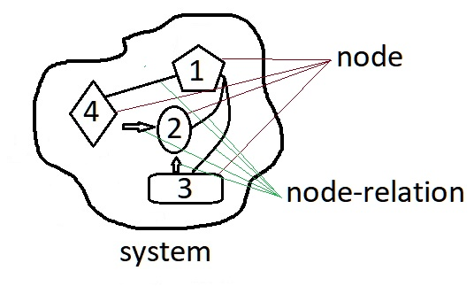
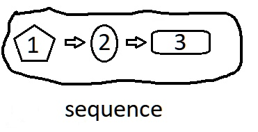
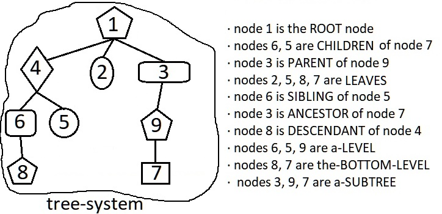

overview of system
definition::
specific-definition:
· system is a-whole-entity with PART structure (parts and part-relations).
===
generic-definition:
·
===
part-definition:
·
===
whole-definition:
· nodes and node-relations make-up a-system.
name::
* McsEngl.McsCor000011.last.html//dirCor//dirMcs!⇒system,
* McsEngl.dirMcs/dirCor/McsCor000011.last.html!⇒system,
* McsEngl.whole.002-system!⇒system,
* McsEngl.whole.002-system!⇒system,
* McsEngl.SYSTEM,
* McsEngl.sys!⇒system,
* McsEngl.syst!⇒system,
* McsEngl.system,
* McsEngl.system!=McsCor000011,
* McsEngl.system!=whole.system,
* McsEngl.wholeSystem!⇒system,
* McsEngl.whole.system!⇒system,
====== langoSinago:
* McsSngo.co-sisto!=system,
* McsSngo.sisto!=system,
====== langoChinese:
* McsEngl.xìtǒng-系统!=system,
* McsZhon.xìtǒng-系统!=system,
* McsZhon.系统-xìtǒng!=system,
====== langoGreek:
* McsElln.σύστημα!το!=system,
====== langoTurkish:
* McsTurk.sistem!=system,
description::
· SYSTEM is a-whole-entity WITH structure (= parts AND part-relations).
· COLLECTION is a-whole-entity with only parts.

01_node of system
description::
· a-system as a-whole, have parts which are-called 'nodes'.
· node could-be any entity, NOT only bodies.
name::
* McsEngl.NODE!⇒nodeSys,
* McsEngl.subsystem!⇒nodeSys,
* McsEngl.system'01_node!⇒nodeSys,
* McsEngl.system'node!⇒nodeSys,
* McsEngl.node//system!⇒nodeSys,
* McsEngl.nodeSys,
* McsEngl.node-of-system!⇒nodeSys,
====== langoSinago:
* McsSngo.jo-ruo-a-sisto!=nodeSys,
* McsSngo.sistos-jo-ruo!=nodeSys,
====== langoChinese:
* McsEngl.jiédiǎn-节点!=nodeSys,
* McsZhon.jiédiǎn-节点!=nodeSys,
* McsZhon.节点-jiédiǎn!=nodeSys,
====== langoGreek:
* McsElln.κόμβος-συστήματος!=nodeSys,
02_node-relation of system
description::
· the-thing that differentiates a-system from a-collection, which both are wholes, is that a-system, except its parts, has AND relations among these parts.
name::
* McsEngl.system'02_node-relation,
* McsEngl.edge-of-system,
* McsEngl.system'edge,
====== langoSinago:
* McsSngo.ro-jo--a-sisto,
* McsSngo.sistos-ro-jo,
====== langoGreek:
* McsElln.σχέση-κόμβου--συστήματος!=system'edge,
03_resource of system
name::
* McsEngl.system'03_resource,
* McsEngl.system'attResource,
* McsEngl.system'Infrsc,
description::
·
04_science of system
description::
· the-science on systems.
* systems-theory,
name::
* McsEngl.science.system,
* McsEngl.system'04_science,
* McsEngl.system'attScience,
* McsEngl.system'science,
systems-science of system
description::
"Systems science is an interdisciplinary field that studies the nature of systems—from simple to complex—in nature, society, cognition, engineering, technology and science itself. To systems scientists, the world can be understood as a system of systems.[1] The field aims to develop interdisciplinary foundations that are applicable in a variety of areas, such as psychology, biology, medicine, communication, business management, computer science, engineering, and social sciences.[2]
Systems science covers formal sciences such as complex systems, cybernetics, dynamical systems theory, information theory, linguistics or systems theory. It has applications in the field of the natural and social sciences and engineering, such as control theory, operations research, social systems theory, systems biology, system dynamics, human factors, systems ecology, computer science, systems engineering and systems psychology.[3] Themes commonly stressed in system science are (a) holistic view, (b) interaction between a system and its embedding environment, and (c) complex (often subtle) trajectories of dynamic behavior that sometimes are stable (and thus reinforcing), while at various 'boundary conditions' can become wildly unstable (and thus destructive). Concerns about Earth-scale biosphere/geosphere dynamics is an example of the nature of problems to which systems science seeks to contribute meaningful insights."
[{2020-07-15} https://en.wikipedia.org/wiki/Systems_science]
name::
* McsEngl.system'att001-systems-science,
* McsEngl.system'systems-science,
* McsEngl.systems-science,
systems-theory of system
description::
"Systems theory is the interdisciplinary study of systems. A system is a cohesive conglomeration of interrelated and interdependent parts that is either natural or man-made. Every system is delineated by its spatial and temporal boundaries, surrounded and influenced by its environment, described by its structure and purpose or nature and expressed in its functioning. In terms of its effects, a system can be more than the sum of its parts if it expresses synergy or emergent behavior. Changing one part of the system usually affects other parts and the whole system, with predictable patterns of behavior. For systems that are self-learning and self-adapting, the positive growth and adaptation depend upon how well the system is adjusted with its environment. Some systems function mainly to support other systems by aiding in the maintenance of the other system to prevent failure. The goal of systems theory is systematically discovering a system's dynamics, constraints, conditions and elucidating principles (purpose, measure, methods, tools, etc.) that can be discerned and applied to systems at every level of nesting, and in every field for achieving optimized equifinality.[1]
General systems theory is about broadly applicable concepts and principles, as opposed to concepts and principles applicable to one domain of knowledge. It distinguishes dynamic or active systems from static or passive systems. Active systems are activity structures or components that interact in behaviours and processes. Passive systems are structures and components that are being processed. E.g. a program is passive when it is a disc file and active when it runs in memory.[2] The field is related to systems thinking, machine logic and systems engineering."
[{2019-12-22} https://en.wikipedia.org/wiki/Systems_theory]
name::
* McsEngl.systems-theory,
05_structure of system
description::
· structure of a-system is its nodes AND its node-relations.

name::
* McsEngl.system'05_structure,
* McsEngl.system'attStructure,
* McsEngl.system'structure,
* McsEngl.structure-of-system,
====== langoSinago:
* McsSngo.sistos-strukto!=system's-structure,
* McsSngo.strukto-a-sisto!=structure-of-system,
====== langoGreek:
* McsElln.δομή-συστήματος!=structure-of-system,
relation-to-sector of system
description::
· system is a set of entities and their relations.
· sector is a set of entities.
name::
* McsEngl.sector-vs-system,
* McsEngl.system'att002-relation-to-sector,
* McsEngl.system'relation-to-sector,
* McsEngl.system-vs-sector,
06_DOING of system
name::
* McsEngl.system'06_doing,
* McsEngl.system'attDoing,
* McsEngl.system'doing,
description::
· ALL systems have doings (creation, disintegration) but not functions.
07_EVOLUTING of system
name::
* McsEngl.system'07_evoluting,
* McsEngl.system'attEvoluting,
* McsEngl.evoluting-of-system,
* McsEngl.system'evoluting,
{2020-04-10}::
=== McsHitp-creation:
· creation of current concept by removing it from whole-concept.
WHOLE-PART-TREE of system
name::
* McsEngl.system'whole-part-tree,
whole-tree-of-system::
*
* ... Sympan.
part-tree-of-system::
*
GENERIC-SPECIFIC-TREE of system
name::
* McsEngl.system'generic-specific-tree,
GENERIC-TREE of system
generic-of-system::
* whole-entity,
attribute-tree-of-system::
* ,
att-tree-inherited-from::
· :
* ,
att-tree-own-of-system::
* ,
SPECIFIC-TREE of system
specific-of-system::
* graph,
* sequence,
* tree-system,
===
* system.structure.complex,
* system.structure.medium,
* system.structure.simple,
===
* body-system,
* doing-system,
* relation-system,
===
* bio-system,
* bioNo-system,
===
* dynamic-system,
* dynamicNo-system,
===
* open-system,
* openNo-system,
system.sequence-001
description::
· sequence is a-system, the-simplest one, with its parts arranged.

===
"(n) ordering, order, ordination (logical or comprehensible arrangement of separate elements) "we shall consider these questions in the inverse order of their presentation""
[http://wordnetweb.princeton.edu/perl/webwn?s=order]
"(n) series (similar things placed in order or happening one after another) "they were investigating a series of bank robberies""
[http://wordnetweb.princeton.edu/perl/webwn?s=series]
"(n) sequence (serial arrangement in which things follow in logical order or a recurrent pattern) "the sequence of names was alphabetical"; "he invented a technique to determine the sequence of base pairs in DNA""
[http://wordnetweb.princeton.edu/perl/webwn?s=sequence]
name::
* McsEngl.SEQUENCE,
* McsEngl.system.001-sequence!⇒sequence,
* McsEngl.system.sequence!⇒sequence,
* McsEngl.list!⇒sequence,
* McsEngl.order-system!⇒sequence,
* McsEngl.ordered-set!⇒sequence,
* McsEngl.ordering!⇒sequence,
* McsEngl.ordination!⇒sequence,
* McsEngl.sequence,
* McsEngl.series!⇒sequence,
* McsEngl.sysSequence!⇒sequence,
* McsEngl.system.ordered!⇒sequence,
====== langoSinago:
* McsSngo.siro!=sequence,
* McsSngo.sisto-siro!=sequence,
====== langoGreek:
* McsElln.ακολουθία!η!=sequence,
* McsElln.λίστα!η!=sequence,
* McsElln.σειρά!η!=sequence,
====== langoTurkish:
* McsTurk.dizi!=sequence,
element of sequence
description::
· element-of-sequence is any of its parts.
name::
* McsEngl.sequence'element,
====== langoSinago:
* McsSngo.jo-ruo-a-sistoSiro!=sequence'element,
* McsSngo.saro!=sequence'element,
* McsSngo.sistosSiros-jo-ruo!=sequence'element,
abstract-order of sequence
description::
· abstract-order\a\ of sequence is the-position of an-element WITHOUT the-element.
· it\a\ is similar to abstract-quantity.
=== dì-第!=abstract-order:
· _stxZhon: 第 一 :: dì-yī != The first
· _stxZhon: 第 二 :: dì-èr != The second
name::
* McsEngl.abstract-order!⇒order,
* McsEngl.order,
* McsEngl.order-(abstract-order)!⇒order,
* McsEngl.position-of-order!⇒order,
* McsEngl.sequence'order!⇒order,
* McsEngl.sequence'position!⇒order,
====== langoSinago:
* McsSngo.suro!=abstract-order,
====== langoChinese:
* McsEngl.dì-第!=abstract-order,
* McsZhon.dì-第!=abstract-order,
* McsZhon.第-dì!=abstract-order,
ordinal-number of sequence
description::
· ordinal-number is a-name of an-order.
· "In English, there are four different suffixes for ordinal numbers: -st, -nd, -rd and -th. Chinese makes things a lot simpler by using one prefix for all ordinal numbers: 第 (dì). This character is simply placed in front of the number"
[{2023-07-08 retrieved} https://resources.allsetlearning.com/chinese/grammar/Ordinal_numbers_with_%22di%22]
name::
* McsEngl.ordinal-number,
====== langoChinese:
* McsEngl.xùshù-cí-序数词!=ordinal-number,
* McsZhon.xùshù-cí-序数词!=ordinal-number,
* McsZhon.序数词-xùshù-cí!=ordinal-number,
====== langoGreek:
* McsElln.αριθμητικό.τακτικό!=ordinal-number,
* McsElln.τακτικό-αριθμητικό!=ordinal-number,
order.SPECIFIC
description::
* first-1st,
* second-2nd,
* third-3rd,
* forth-4th,
* fifth-6th,
...
name::
* McsEngl.order.specific,
order.1st
description::
·
name::
* McsEngl.1st!=order1,
* McsEngl.first!=order1,
* McsEngl.order1,
====== langoSinago:
* McsSngo.suro-fo!=order1,
====== langoEsperanto:
* McsEspo.unua!=order1,
====== langoGreek:
* McsElln.επίθετο.πρώτος!ος-η-ο!=order1,
* McsElln.πρώτος!ος-η-ο!~adjeElln!=order1,
order.2nd
description::
"(n) second (following the first in an ordering or series) "he came in a close second""
[http://wordnetweb.princeton.edu/perl/webwn?s=second]
name::
* McsEngl.2nd!=order2,
* McsEngl.order2,
* McsEngl.second!=order2,
====== langoSinago:
* McsSngo.suro-tho!=order2,
====== langoEsperanto:
* McsEspo.dua!=order2,
====== langoGreek:
* McsElln.επίθετο.δεύτερος!-ος-η-ο!=order2,
* McsElln.δεύτερος!-ος-η-ο!~adjeElln!=order2,
order.3rd
description::
· abstract-order third.
"(n) third (following the second position in an ordering or series) "a distant third"; "he answered the first question willingly, the second reluctantly, and the third with resentment""
[http://wordnetweb.princeton.edu/perl/webwn?s=third]
name::
* McsEngl.3rd!=order3,
* McsEngl.third!=order3,
====== langoSinago:
* McsSngo.suro-to!=order3,
====== langoEsperanto:
* McsEspo.tria!=order3,
====== langoGreek:
* McsElln.επίθετο.τρίτος!-ος-η-ο!=order3,
* McsElln.τρίτος!-ος-η-ο!~adjeElln!=order3,
order.4th
description::
· abstract-order fourth.
name::
* McsEngl.4th!=order4,
* McsEngl.fourth!=order4,
* McsEngl.order4,
====== langoSinago:
* McsSngo.suro-so!=order4,
====== langoEsperanto:
* McsEspo.kvara!=order4,
====== langoGreek:
* McsElln.επίθετο.τέταρτος!-ος-η-ο!=order4,
* McsElln.τέταρτος!-ος-η-ο!~adjeElln!=order4,
order.5th
description::
· abstract-order fifth.
name::
* McsEngl.5th!=order5,
* McsEngl.fifth!=order5,
* McsEngl.order5,
====== langoSinago:
* McsSngo.suro-co!=order5,
====== langoEsperanto:
* McsEspo.kvina!=order5,
====== langoGreek:
* McsElln.πέντε!το!=order5,
* McsElln.επίθετο.πέμπτος!-ος-η-ο!=order5,
* McsElln.πέμπτος!-ος-η-ο!~adjeElln!=order5,
order.6th
description::
· abstract-order six.
"(n) sixth (position six in a countable series of things)"
[http://wordnetweb.princeton.edu/perl/webwn?s=sixth]
name::
* McsEngl.6th!=order6,
* McsEngl.sixth!=order6,
* McsEngl.order6,
====== langoSinago:
* McsSngo.suro-ko!=order6,
====== langoEsperanto:
* McsEspo.sesa!=order6,
====== langoGreek:
* McsElln.επίθετο.έκτος!-ος-η-ο!=order6,
* McsElln.έκτος!-ος-η-ο!~adjeElln!=order6,
order.7th
description::
· abstract-order seventh.
name::
* McsEngl.7th!=order7,
* McsEngl.seventh!=order7,
* McsEngl.order7,
====== langoSinago:
* McsSngo.suro-ho!=order7,
====== langoEsperanto:
* McsEspo.sepa!=order7,
====== langoGreek:
* McsElln.εφτά-το!=order7,
order.8th
description::
· abstract-order eighth.
name::
* McsEngl.8th,
* McsEngl.eighth,
====== langoSinago:
* McsSngo.suro-mo!=8th,
====== langoEsperanto:
* McsEspo.oka,
====== langoGreek:
* McsElln.επίθετο.όγδοος!=όγδοος-η-ο,
* McsElln.όγδοος!~adjeElln!=όγδοος-η-ο,
order.9th
description::
· abstract-order nine.
name::
* McsEngl.9th,
* McsEngl.ninth,
====== langoSinago:
* McsSngo.suro-ro!=9th,
====== langoEsperanto:
* McsEspo.naŭa,
====== langoGreek:
* McsElln.επίθετο.ένατος!=ένατος-η-ο,
* McsElln.ένατος!~adjeElln!=ένατος-η-ο,
order.10th
description::
· abstract-order ten.
name::
* McsEngl.10th!=order10,
* McsEngl.tenth!=order10,
* McsEngl.order10,
====== langoSinago:
* McsSngo.suro-foPo!=order10,
====== langoEsperanto:
* McsEspo.deka!=order10,
====== langoGreek:
* McsElln.επίθετο.δέκατος!-ος-η-ο!=order10,
* McsElln.δέκατος!-ος-η-ο!~adjeElln!=order10,
order.11th
description::
·
name::
* McsEngl.11th,
* McsEngl.eleventh,
====== langoSinago:
* McsSngo.suro-foFo!=11th,
====== langoEsperanto:
* McsEspo.dekunua,
====== langoGreek:
* McsElln.επίθετο.ενδέκατος!=ενδέκατος-η-ο,
* McsElln.ενδέκατος!~adjeElln!=ενδέκατος-η-ο,
order.12th
description::
·
name::
* McsEngl.12th,
* McsEngl.twelfth,
====== langoSinago:
* McsSngo.suro-foTho!=12th,
====== langoEsperanto:
* McsEspo.dekdua,
====== langoGreek:
* McsElln.επίθετο.δωδέκατος!=δωδέκατος-η-ο,
* McsElln.δωδέκατος!~adjeElln!=δωδέκατος-η-ο,
order.13th
description::
"(n) thirteenth (position 13 in a countable series of things)"
[http://wordnetweb.princeton.edu/perl/webwn?s=thirteenth]
name::
* McsEngl.13th,
* McsEngl.thirteenth,
====== langoSinago:
* McsSngo.suro-foTho!=13th,
====== langoEsperanto:
* McsEspo.dektria,
====== langoGreek:
* McsElln.επίθετο.δέκατος-τρίτος!=δέκατος-τρίτος-η-ο,
* McsElln.δέκατος-τρίτος!~adjeElln!=δέκατος-τρίτος-η-ο,
order.20th
description::
·
name::
* McsEngl.20th,
* McsEngl.twentieth,
====== langoSinago:
* McsSngo.suro-thoPo!=20th,
====== langoEsperanto:
* McsEspo.dudeka,
====== langoGreek:
* McsElln.επίθετο.εικοσιοστός!=εικοσιοστός-η-ο,
* McsElln.εικοσιοστός!~adjeElln!=εικοσιοστός-η-ο,
order.21st
description::
·
name::
* McsEngl.21st,
* McsEngl.twentieth-first,
====== langoSinago:
* McsSngo.suro-thoPo!=21st,
====== langoEsperanto:
* McsEspo.dudeka-unua,
====== langoGreek:
* McsElln.επίθετο.εικοσιοστός-πρώτος!=εικοσιοστός-πρώτος-η-ο,
* McsElln.εικοσιοστός-πρώτος!~adjeElln!=εικοσιοστός-πρώτος-η-ο,
order.99th
description::
·
name::
* McsEngl.99th,
* McsEngl.ninetieth-ninth,
====== langoSinago:
* McsSngo.suro-roRo!=99th,
====== langoEsperanto:
* McsEspo.naŭdeka-naŭa,
====== langoGreek:
* McsElln.επίθετο.ενενηκοστός-ένατος!=ενενηκοστός-ένατος-η-ο,
* McsElln.ενενηκοστός-ένατος!~adjeElln!=ενενηκοστός-ένατος-η-ο,
order.100th
description::
·
name::
* McsEngl.100th,
* McsEngl.hundredth,
====== langoSinago:
* McsSngo.suro-foPoPo!=100th,
====== langoEsperanto:
* McsEspo.centa,
====== langoGreek:
* McsElln.επίθετο.εκατοστός!=εκατοστός-η-ο,
* McsElln.εκατοστός!~adjeElln!=εκατοστός-η-ο,
order.101st
description::
·
name::
* McsEngl.101st,
* McsEngl.one-hundredth-first,
====== langoSinago:
* McsSngo.suro-foPoFo!=101st,
====== langoEsperanto:
* McsEspo.centa-unua,
====== langoGreek:
* McsElln.επίθετο.εκατοστός-πρώτος!=εκατοστός-πρώτος-η-ο,
* McsElln.εκατοστός-πρώτος!~adjeElln!=εκατοστός-πρώτος-η-ο,
order.200th
description::
·
name::
* McsEngl.200th,
* McsEngl.two-hundredth,
====== langoSinago:
* McsSngo.suro-thoPoPo!=200th,
====== langoEsperanto:
* McsEspo.ducenta,
====== langoGreek:
* McsElln.επίθετο.διακοσιοστός!=διακοσιοστός-η-ο,
* McsElln.διακοσιοστός!~adjeElln!=διακοσιοστός-η-ο,
order.999th
description::
·
name::
* McsEngl.999th,
* McsEngl.nine-hundredth-ninetieth-ninth,
====== langoSinago:
* McsSngo.suro-roRoRo!=999th,
====== langoEsperanto:
* McsEspo.naŭcenta-naŭdeka-naŭa,
====== langoGreek:
* McsElln.επίθετο.εννιακοσιοστός-ενενηκοστός-ένατος!=ενιακοστός-ενενηκοστός-ένατος-η-ο,
* McsElln.εννιακοσιοστός-ενενηκοστός-ένατος!~adjeElln!=ενιακοστός-ενενηκοστός-ένατος-η-ο,
order.1'000th (1000^1)
description::
·
name::
* McsEngl.1'000th,
* McsEngl.thousandth,
====== langoSinago:
* McsSngo.suro-Kilo1Fo!=1'000th,
====== langoEsperanto:
* McsEspo.mila,
====== langoGreek:
* McsElln.επίθετο.χιλιοστός!=χιλιοστός-η-ο,
* McsElln.χιλιοστός!~adjeElln!=χιλιοστός-η-ο,
order.1'001st
description::
·
name::
* McsEngl.1001st,
* McsEngl.one-thousandth-first,
====== langoSinago:
* McsSngo.suro-Kilo1Fo-Kilo0PoPoFo!=1'001st,
====== langoEsperanto:
* McsEspo.unu-mila-unua,
====== langoGreek:
* McsElln.επίθετο.χιλιοστός-πρώτος!=χιλιοστός-πρώτος-η-ο,
* McsElln.χιλιοστός-πρώτος!~adjeElln!=χιλιοστός-πρώτος-η-ο,
order.2000th
description::
·
name::
* McsEngl.2000th,
* McsEngl.two-thousandth,
====== langoSinago:
* McsSngo.suro-Kilo1Tho!=2'000th,
====== langoEsperanto:
* McsEspo.dumila,
====== langoGreek:
* McsElln.επίθετο.δις-χιλιοστός!=δις-χιλιοστός-η-ο,
* McsElln.δις-χιλιοστός!~adjeElln!=δις-χιλιοστός-η-ο,
order.999'999th
description::
·
name::
* McsEngl.999'999th,
* McsEngl.nine-hundredth-ninetieth-ninth-thousandth-nine-hundredth-ninetieth-ninth,
====== langoSinago:
* McsSngo.suro-Kilo1RoRoRo-Kilo0RoRoRo!=999'999th,
====== langoEsperanto:
* McsEspo.naŭcenta-naŭdeka-naŭa-mila-naŭcenta-naŭdeka-naŭa,
====== langoGreek:
* McsElln.επίθετο.εννιακοσιοστός-ενενηκοστός-ένατος-χιλιοστός-εννιακοσιοστός-ενενηκοστός-ένατος!=,
* McsElln.εννιακοσιοστός-ενενηκοστός-ένατος-χιλιοστός-εννιακοσιοστός-ενενηκοστός-ένατος!~adjeElln!=,
order.1'000'000th (1000^2)
description::
·
name::
* McsEngl.1'000'000th,
* McsEngl.millionth,
====== langoSinago:
* McsSngo.suro-Kilo2Fo!=1'000'000th,
====== langoEsperanto:
* McsEspo.unu-miliona,
====== langoGreek:
* McsElln.επίθετο.εκατομμυριοστός!=εκατομμυριοστός-η-ο,
* McsElln.εκατομμυριοστός!~adjeElln!=εκατομμυριοστός-η-ο,
order.2'000'000th
description::
·
name::
* McsEngl.2'000'000th,
* McsEngl.two-millionth,
====== langoSinago:
* McsSngo.suro-Kilo2Tho!=2'000'000th,
====== langoGreek:
====== langoEsperanto:
* McsEspo.du-miliona,
* McsElln.επίθετο.δύο-εκατομμυριοστός!=δύο-εκατομμυριοστός-η-ο,
* McsElln.δύο-εκατομμυριοστός!~adjeElln!=δύο-εκατομμυριοστός-η-ο,
order.1'000'000'000th (1000^3)
description::
·
name::
* McsEngl.1'000'000'000th,
* McsEngl.billionth,
====== langoSinago:
* McsSngo.suro-Kilo3Fo!=1'000'000'000th,
====== langoEsperanto:
* McsEspo.miliarda,
====== langoGreek:
* McsElln.επίθετο.δισεκατομμυριοστός!=δισεκατομμυριοστός-η-ο,
* McsElln.δισεκατομμυριοστός!~adjeElln!=δισεκατομμυριοστός-η-ο,
order.1'000'000'000'000th (1000^4)
description::
·
name::
* McsEngl.1'000'000'000'000th,
* McsEngl.trillionth,
====== langoSinago:
* McsSngo.suro-Kilo4Fo!=1'000'000'000'000th,
====== langoEsperanto:
* McsEspo.duiliona,
====== langoGreek:
* McsElln.επίθετο.τρισεκατομμυριοστός!=τρισεκατομμυριοστός-η-ο,
* McsElln.τρισεκατομμυριοστός!~adjeElln!=τρισεκατομμυριοστός-η-ο,
order.1'000'000'000'000'000th (1000^5)
description::
·
name::
* McsEngl.1'000'000'000'000'000th,
* McsEngl.quadrillionth,
====== langoSinago:
* McsSngo.suro-Kilo5Fo!=1'000'000'000'000'000th,
====== langoEsperanto:
* McsEspo.kvariliona,
====== langoGreek:
* McsElln.επίθετο.τετράκις-εκατομμυριοστός!=τετράκις-εκατομμυριοστός-η-ο,
* McsElln.τετράκις-εκατομμυριοστός!~adjeElln!=τετράκις-εκατομμυριοστός-η-ο,
order.relative
description::
· relative-order is order defined in relation to another order.
name::
* McsEngl.order.relative,
* McsEngl.relative-order,
order.relative.SPECIFIC
description::
* before-order,
* same-order,
* after-order,
===
* first-order,
* middle-order,
* last-order,
name::
* McsEngl.order.relative.specific,
order.relative.first
description::
·
name::
* McsEngl.first-order,
* McsEngl.order.relative.first,
====== langoSinago:
* McsSngo.suro-fo,
order.relative.middle
description::
·
name::
* McsEngl.middle-order,
* McsEngl.order.relative.middle,
====== langoSinago:
* McsSngo.suro-mido,
order.relative.last
description::
·
name::
* McsEngl.last-order,
* McsEngl.order.relative.last,
====== langoSinago:
* McsSngo.suro-foUno,
order.relative.before-order
description::
· order, relative, before order.
name::
* McsEngl.before-order,
* McsEngl.order.relative.before-order,
====== langoSinago:
* McsSngo.suro-ana-ordo,
order.relative.same-order
description::
· order, relative, same order.
name::
* McsEngl.same-order,
* McsEngl.order.relative.same-order,
====== langoSinago:
* McsSngo.suro-ena-ordo,
order.relative.after-order
description::
· order, relative, after order.
name::
* McsEngl.after-order,
* McsEngl.order.relative.after-order,
====== langoSinago:
* McsSngo.suro-ina-ordo,
order.relativeNo
description::
· absolute-order is order NOT defined in relation to another order.
name::
* McsEngl.absolute-order,
* McsEngl.order.relativeNo,
* McsEngl.relativeNo-order,
order-relation of sequence
description::
· order-relation is the-relation among the-elements of a-sequence.
name::
* McsEngl.order-relation,
* McsEngl.relation.order,
* McsEngl.sequence'order-relation,
structure of sequence
description::
· sequence-structure is the-structure of a-sequence which is an-arrangement of its parts.
name::
* McsEngl.sequence'structure,
* McsEngl.sequence-structure,
system.tree-002
description::
· tree-system is a-system with a-tree-structure.

name::
* McsEngl.hierarchy!⇒systTree,
* McsEngl.system.tree!⇒systTree,
* McsEngl.sysTree!⇒systTree,
* McsEngl.systTree,
* McsEngl.tree!⇒systTree,
* McsEngl.tree-system!⇒systTree,
====== langoSinago:
* McsSngo.sisto-tro!=systTree,
====== langoGreek:
* McsElln.δένδρου-σύστημα!=systTree,
* McsElln.σύστημα-δένδρου!=systTree,
01_node of systTree
description::
· node of systTree is its node-of-system, ie its parts as a-whole.
name::
* McsEngl.systTree'01_node!⇒tree-node,
* McsEngl.systTree'node!⇒tree-node,
* McsEngl.node-of-systTree!⇒tree-node,
* McsEngl.systTree'part!⇒tree-node,
* McsEngl.systTree'vertex!⇒tree-node,
* McsEngl.tree-node,
* McsEngl.vertex-of-systTree!⇒tree-node,
====== langoSinago:
* McsSngo.jo-ruo-a-sistoTro!=tree-node,
* McsSngo.sistosTros-jo-ruo!=tree-node,
====== langoGreek:
* McsElln.κόμβος--συστήματος-δένδρου!=tree-node,
children-number of tree-node
description::
· children-number-of-node is the-number of its children.
name::
* McsEngl.tree-node'children-number,
* McsEngl.tree-node'degree,
level-number of tree-node
description::
· level-number--of--tree-node is a-number that denotes the-number of levels from the-top OR bottom level of the-tree.
name::
* McsEngl.tree-node'level-number,
depth of tree-node
description::
· depth-of--tree-node\a\ is the-number of levels from root including the-level of node\a\.
name::
* McsEngl.tree-node'depth,
height of tree-node
description::
· height-of--tree-node\a\ is the-number of levels from bottom-level including the-level of node\a\.
name::
* McsEngl.tree-node'height,
path of tree-node
description::
· path-of-node\a\ is the-sequence of nodes and edges from node\a\ to root or the-opposite.
name::
* McsEngl.tree-node'chain,
* McsEngl.tree-node'path,
specific::
* generic-chain,
* whole-chain,
tree-node.SPECIFIC
description::
* anchestor-node,
* branch-node,
* child-node,
* decendant-node,
* leaf-node,
* leafNo-node,
* level-of-tree,
* neighbor-node,
* parent-node,
* root-node,
* sibling-node,
* subtree,
name::
* McsEngl.tree-node.specific,
tree-node.root
description::
· root is the-most higher node.
· root-level--of-systTree is the-most higher level-of-tree.
· root-level and root are same entities.
name::
* McsEngl.tree-node.root,
* McsEngl.root-level--of-systTree,
* McsEngl.root-node--of-systTree,
* McsEngl.top-level--of-systTree,
* McsEngl.systTree'root-level,
tree-node.child
description::
· child-node of node\a\ is a-node that directly follows node\a\.
name::
* McsEngl.child-node--of--tree-system,
* McsEngl.tree-node.child,
tree-node.parent
description::
· parent-node of node\a\ is a-node that directly preceds node\a\.
· all nodes have one parent except root.
name::
* McsEngl.parent-node--of--tree-system,
* McsEngl.tree-node.parent,
tree-node.neighbor
description::
· neighbo-node of node\a\ is any node which is parent or child of node\a\.
name::
* McsEngl.neighbor-node--of--tree-system,
* McsEngl.tree-node.neighbor,
tree-node.leaf
description::
· leaf-node is a-node without children.
name::
* McsEngl.leaf-node--of--tree-system,
* McsEngl.tree-node.external,
* McsEngl.tree-node.leaf,
tree-node.leafNo
description::
· leafNo-node is a-node with children.
name::
* McsEngl.leafNo-node--of--tree-system,
* McsEngl.tree-node.branch,
* McsEngl.tree-node.internal,
* McsEngl.tree-node.leafNo,
tree-node.ancestor
description::
· ancestor-node of node\a\ is any node that preceds node\a\.
name::
* McsEngl.ancestor-node--of--tree-system,
* McsEngl.tree-node.ancestor,
tree-node.descendant
description::
· descendant-node of node\a\ is any node that follows node\a\.
name::
* McsEngl.descendant-node--of--tree-system,
* McsEngl.tree-node.descendant,
tree-node.sibling
description::
· sibling-node of node\a\ is any node which shares same parent with node\a\.
name::
* McsEngl.sibling-node--of--tree-system,
* McsEngl.tree-node.sibling,
tree-node.level
description::
· level-of--tree-system is the-set of nodes with the-same level-number.
name::
* McsEngl.level--of--tree-system!⇒tree-level,
* McsEngl.systTree'03_level!⇒tree-level,
* McsEngl.systTree'level!⇒tree-level,
* McsEngl.tree-level,
* McsEngl.tree-node.level!⇒tree-level,
width of tree-level
description::
· width-of--tree-level is the-number of nodes of a-level.
name::
* McsEngl.tree-level'width,
tree-level.bottom
description::
· bottom-level is the-most lower level of a-tree.
name::
* McsEngl.bottom-level--of-systTree,
* McsEngl.systTree'bottom-level,
* McsEngl.tree-level.bottom,
tree-node.subtree
description::
· subtree of tree\a\ is a-node\b\ of tree\a\ and all its\b\ descendants.
name::
* McsEngl.subtree,
* McsEngl.tree-node.subtree,
02_node-relation of systTree
description::
· node-relation--of--tree-system is its node-relation--of-system.
name::
* McsEngl.systTree'02_node-relation,
* McsEngl.systTree'node-relation,
* McsEngl.systTree'edge,
03_level (link) of systTree
04_degree of systTree
description::
· degree-of--tree-system is the-number of children of its root.
name::
* McsEngl.systTree'04_degree,
* McsEngl.systTree'degree,
05_size of systTree
description::
· size-of-tree-system is the-number of its nodes.
name::
* McsEngl.systTree'05_size,
* McsEngl.systTree'size,
06_breadth of systTree
description::
· breadth-of--tree-system is the-number of its leaves.
name::
* McsEngl.systTree'06_breadth,
* McsEngl.systTree'breadth,
07_resource of systTree
description::
* https://www.wsi.uni-tuebingen.de/lehrstuehle/algorithms-in-bioinformatics/software/dendroscope/,
* https://en.wikipedia.org/wiki/Newick_format,
* https://en.wikipedia.org/wiki/Nexus_file,
name::
* McsEngl.systTree'07_resource,
* McsEngl.systTree'Infrsc,
08_structure of systTree
description::
· tree-structure is the-structure of a-tree-system which looks like an-inverted tree.
name::
* McsEngl.systTree'08_structure,
* McsEngl.systTree'structure,
* McsEngl.tree-structure,
* McsEngl.tree-system'structure,
====== langoSinago:
* McsSngo.sistosTros-strukto,
* McsSngo.strukto-tro,
====== langoGreek:
* McsElln.δομή-δένδρου,
09_DOING of systTree
name::
* McsEngl.systTree'09_doing,
* McsEngl.systTree'doing,
description::
·
10_EVOLUTING of systTree
name::
* McsEngl.systTree'10_evoluting,
* McsEngl.evoluting-of-systTree,
* McsEngl.systTree'evoluting,
description::
·
systTree.SPECIFIC
description::
* generic-specific--systTree,
* whole-part--systTree,
===
* binary-systTree,
* ordered-systTree,
name::
* McsEngl.systTree.specific,
systTree.binary
description::
· binary-tree is a-tree-system with 2 children at most.
name::
* McsEngl.binary-tree,
* McsEngl.tree-system.binary,
* McsEngl.systTreeBinary,
* McsEngl.systTree.binary,
systTree.ordered
description::
· ordered--tree-system is a-tree-system in which an-ordering is-specified for the-children of each node.
name::
* McsEngl.ordered-systTree,
* McsEngl.systTreeOrdered,
* McsEngl.systTree.ordered,
systTree.generic-specific
description::
· generic-specific--tree-system is a-tree-system with generic-specific node-relations.
===
"Taxonomy is the practice and science of classification. The word is also used as a count noun: a taxonomy, or taxonomic scheme, is a particular classification. The word finds its roots in the Greek language τάξις, taxis (meaning 'order', 'arrangement') and νόμος, nomos ('law' or 'science'). Originally, taxonomy referred only to the classification of organisms or a particular classification of organisms. In a wider, more general sense, it may refer to a classification of things or concepts, as well as to the principles underlying such a classification. Taxonomy is different from meronomy, which is dealing with the classification of parts of a whole.
Many taxonomies have a hierarchical structure, but this is not a requirement. Taxonomy uses taxonomic units, known as "taxa" (singular "taxon")."
[{2019-12-24} https://en.wikipedia.org/wiki/Taxonomy_(general)]
name::
* McsEngl.systTree.generic-specific!⇒treeGs,
* McsEngl.generic-specific--tree-system!⇒treeGs,
* McsEngl.generic-specific--tree!⇒treeGs,
* McsEngl.systTreeGs!⇒treeGs,
* McsEngl.treeGs, {2021-06-06},
* McsEngl.tree-system.generic-specific!⇒treeGs,
* McsEngl.taxonomy!⇒treeGs,
* McsEngl.systTreeGenericspecific!⇒treeGs,
* McsEngl.tree.generic-specific!⇒treeGs,
treeGs'taxon
description::
· taxon is a-node of a-generic-tree.
name::
* McsEngl.taxa!~plural-of-taxon,
* McsEngl.taxon,
* McsEngl.treeGs'taxon,
taxon.monotypic
name::
* McsEngl.taxon.monotypic,
* McsEngl.monotypic-taxon,
description::
"In biology, a monotypic taxon is a taxonomic group (taxon) that contains only one immediately subordinate taxon.[1]
A monotypic species is one that does not include subspecies or smaller, infraspecific taxa. In the case of genera, the term "unispecific" or "monospecific" is sometimes preferred.
In botanical nomenclature, a monotypic genus is a genus in the special case where a genus and a single species are simultaneously described.[2]
In contrast an oligotypic taxon contains more than one but only a very few subordinate taxa."
[{2020-04-19} https://en.wikipedia.org/wiki/Monotypic_taxon]
relation-to-ontology of treeGs
description::
">taxonomy vs ontology:
Taxonomy and ontology are both terms used in the context of organizing information, but they have distinct meanings and applications. Here's an overview of the key differences between taxonomy and ontology:
### Taxonomy:
1. **Definition:**
- **Taxonomy** refers to the science of classification. In information organization, it involves the arrangement of entities into hierarchical categories based on shared characteristics.
2. **Hierarchy:**
- Taxonomies are typically hierarchical structures where entities are organized into parent-child relationships. Each level in the hierarchy represents a broader or more general category.
3. **Purpose:**
- The primary purpose of a taxonomy is to classify and categorize information to make it easier to navigate and understand. Taxonomies are often used for organizing content, such as in libraries, websites, or product catalogs.
4. **Controlled Vocabulary:**
- Taxonomies often come with a controlled vocabulary, meaning there's a predefined set of terms used to categorize entities. This helps maintain consistency in classification.
### Ontology:
1. **Definition:**
- **Ontology** is a broader and more formalized framework for representing knowledge. It defines the relationships between concepts and provides a more detailed and semantically rich description of a domain.
2. **Representation:**
- Ontologies use a more expressive and structured representation, often involving relationships, properties, and axioms. They aim to capture the meaning of concepts and their interconnections.
3. **Semantics:**
- Ontologies are concerned with the semantics of information. They go beyond mere categorization and aim to represent the meaning and relationships between different concepts within a domain.
4. **Interoperability:**
- Ontologies are used to promote interoperability between systems by providing a shared understanding of a domain. They enable machines to reason about concepts in a standardized way.
5. **Applications:**
- Ontologies find applications in various fields such as artificial intelligence, knowledge representation, and the Semantic Web. They are used for modeling complex relationships and supporting more advanced forms of information retrieval and inference.
In summary, while taxonomy focuses on the hierarchical classification of entities for the purpose of organization and navigation, ontology goes further by providing a formalized and semantically rich representation of knowledge with a focus on meaning and relationships. Both taxonomy and ontology are valuable tools in information management, and they can complement each other in creating structured and meaningful representations of information."
[{2023-11-14 retrieved} https://chat.openai.com/c/d54f0a84-9dfd-4768-b22d-276ed183764d]
name::
* McsEngl.ontology'relation-to-taxonomy,
* McsEngl.taxonomy'relation-to-ontology,
* McsEngl.treeGs'relation-to-ontology,
treeGs.generic-tree--of-concept
description::
· generic-tree--of-concept is a-generic-specific-tree with the-concept on the-bottom-level.
name::
* McsEngl.generic-tree--of-concept,
* McsEngl.treeGs.generic-of-concept,
treeGs.specific-tree--of-concept
description::
· specific-tree--of-concept is a-generic-specific-tree with the-concept on the-root-level.
name::
* McsEngl.specific-tree--of-concept,
* McsEngl.treeGs.specific-of-concept,
systTree.whole-part
description::
· part-whole--tree-system is a-tree-system with whole-part node-relations.
===
"A meronomy or partonomy is a type of hierarchy that deals with part–whole relationships, in contrast to a taxonomy whose categorisation is based on discrete sets. Accordingly, the unit of meronomical classification is meron, while the unit of taxonomical classification is taxon. These conceptual structures are used in linguistics and computer science, with applications in biology. The part–whole relationship is sometimes referred to as HAS-A, and corresponds to object composition in object-oriented programming.[1] The study of meronomy is known as mereology, and in linguistics a meronym is the name given to a constituent part of, the substance of, or a member of something. "X" is a meronym of "Y" if an X is a part of a Y.[2]"
[{2019-12-24} https://en.wikipedia.org/wiki/Meronomy]
name::
* McsEngl.systTree.whole-part!⇒treeWp,
* McsEngl.meronomy!⇒treeWp,
* McsEngl.part-whole--tree-system!⇒treeWp,
* McsEngl.partonomy!⇒treeWp,
* McsEngl.systTreeWp!⇒treeWp,
* McsEngl.tree-system.whole-part!⇒treeWp,
* McsEngl.treeWp,
* McsEngl.whole-part--tree-system!⇒treeWp,
* McsEngl.whole-part--tree!⇒treeWp,
* McsEngl.systTreeWholepart!⇒treeWp,
* McsEngl.tree.whole-part!⇒treeWp,
treeWp'meron
description::
· meron is a-node of a-whole-tree.
name::
* McsEngl.meron,
* McsEngl.treeWp'meron,
systTree.evolutionary
description::
· evolutionary-tree is a-tree with nodes entities created from the-evolution of previous ones.
name::
* McsEngl.ancestral-tree!⇒treeEvl,
* McsEngl.evolutionary-tree!⇒treeEvl,
* McsEngl.family-tree!⇒treeEvl,
* McsEngl.hereditary-tree!⇒treeEvl,
* McsEngl.parent-child-tree!⇒treeEvl,
* McsEngl.systTree.evolutionary!⇒treeEvl,
* McsEngl.tree.evolutionary!⇒treeEvl,
* McsEngl.treeEvolutionary!⇒treeEvl,
* McsEngl.treeEvl,
* McsEngl.treeEvl!=evolutionary-tree,
namingA treeEvl
description::
· parent;child,
· child;;parent,
name::
* McsEngl.child;;parent,
* McsEngl.namingA.child-parent,
* McsEngl.namingA.parent-child,
* McsEngl.namingA.treeEvolutionary,
* McsEngl.parent;child,
system.graph-003
description::
· graph is an-abstract system.
· abstract means just a-concept, without referent.
[hmnSngo-{2020-07-24}]
===
· graph-system is a-system with nodes abstract-concepts, just dots.
===
"In mathematics, and more specifically in graph theory, a graph is a structure amounting to a set of objects in which some pairs of the objects are in some sense "related". The objects correspond to mathematical abstractions called vertices (also called nodes or points) and each of the related pairs of vertices is called an edge (also called link or line).[1] Typically, a graph is depicted in diagrammatic form as a set of dots or circles for the vertices, joined by lines or curves for the edges. Graphs are one of the objects of study in discrete mathematics."
[{2019-11-07} https://en.wikipedia.org/wiki/Graph_(discrete_mathematics)]
name::
* McsEngl.abstract-system!⇒sysGraph,
* McsEngl.graph-system!⇒sysGraph,
* McsEngl.system.graph!⇒sysGraph,
* McsEngl.sysGraph,
* McsEngl.systemGraph!⇒sysGraph,
vertex-(node) of sysGraph
description::
·
name::
* McsEngl.sysGraph'node,
* McsEngl.sysGraph'vertex,
* McsEngl.vertex-of-sysGraph,
edge-(node-relation) of sysGraph
description::
·
name::
* McsEngl.edge-of-sysGraph,
* McsEngl.sysGraph'edge,
* McsEngl.sysGraph'node-relation,
system.body-004
description::
· body-system is a-system of bodies.
name::
* McsEngl.system.004-body!⇒sysBody,
* McsEngl.system.body-004!⇒sysBody,
* McsEngl.body-system!⇒sysBody,
* McsEngl.sysBody,
system.material-005
description::
· material-system is ANY system of material-bodies (atoms, molecules, sysMolecules).
name::
* McsEngl.system.005-material!⇒sysMaterial,
* McsEngl.system.material-005!⇒sysMaterial,
* McsEngl.material.system!⇒sysMaterial,
* McsEngl.material-system!⇒sysMaterial,
* McsEngl.sysMaterial, {2020-04-09},
system.complex-006
name::
* McsEngl.system.006-complex!⇒sysComplex,
* McsEngl.system.complex-006!⇒sysComplex,
* McsEngl.sysComplex,
* McsEngl.complex-structure-system!⇒sysComplex,
* McsEngl.complex-system!⇒sysComplex,
* McsEngl.sysComplex!=complex-system,
description::
· complex-system is a-system with a-complex structure.
info-resource of sysComplex
name::
* McsEngl.sysComplex'Infrsc,
description::
* https://editors.eol.org/eoearth/wiki/Complex_systems,
* http://www.scholarpedia.org/article/Complex_systems,
* https://en.wikipedia.org/wiki/Complex_system,
system.complexMid-007
description::
·
name::
* McsEngl.system.007-complexMid,
* McsEngl.system.complexMid-007,
* McsEngl.complexMid-system,
system.complexNo-008
description::
·
name::
* McsEngl.system.008-complexNo,
* McsEngl.system.complexNo-008,
* McsEngl.complexNo-system,
system.dynamic-009
name::
* McsEngl.system.009-dynamic!⇒sysDynamic,
* McsEngl.system.dynamic-009!⇒sysDynamic,
* McsEngl.dynamic-system!⇒sysDynamic,
* McsEngl.dynamical-system!⇒sysDynamic,
* McsEngl.sysDynamic,
* McsEngl.sysDynamic!=dynamic-system,
description::
· dynamic-system is a-system that evolves.
managing-system (link) of sysDynamic
info-resource of sysDynamic
name::
* McsEngl.sysDynamic'Infrsc,
description::
* http://www.scholarpedia.org/article/Encyclopedia_of_dynamical_systems,
dynamical-systems-theory of sysDynamic
description::
"Dynamical systems theory is an area of mathematics used to describe the behavior of the complex dynamical systems, usually by employing differential equations or difference equations. When differential equations are employed, the theory is called continuous dynamical systems. From a physical point of view, continuous dynamical systems is a generalization of classical mechanics, a generalization where the equations of motion are postulated directly and are not constrained to be Euler–Lagrange equations of a least action principle. When difference equations are employed, the theory is called discrete dynamical systems. When the time variable runs over a set that is discrete over some intervals and continuous over other intervals or is any arbitrary time-set such as a Cantor set, one gets dynamic equations on time scales. Some situations may also be modeled by mixed operators, such as differential-difference equations.
This theory deals with the long-term qualitative behavior of dynamical systems, and studies the nature of, and when possible the solutions of, the equations of motion of systems that are often primarily mechanical or otherwise physical in nature, such as planetary orbits and the behaviour of electronic circuits, as well as systems that arise in biology, economics, and elsewhere. Much of modern research is focused on the study of chaotic systems.
This field of study is also called just dynamical systems, mathematical dynamical systems theory or the mathematical theory of dynamical systems."
[{2020-07-14} https://en.wikipedia.org/wiki/Dynamical_systems_theory]
name::
* McsEngl.dynamical-systems-theory,
* McsEngl.sysDynamic'att003-dynamical-systems-theory,
* McsEngl.sysDynamic'dynamical-systems-theory,
dynamical-systems-theory of sysDynamic
description::
"System dynamics (SD) is an approach to understanding the nonlinear behaviour of complex systems over time using stocks, flows, internal feedback loops, table functions and time delays.[1][2]"
[{2020-07-14} https://en.wikipedia.org/wiki/System_dynamics]
name::
* McsEngl.SD-system-dynamics,
* McsEngl.sysDynamic'att004-system-dynamics,
* McsEngl.sysDynamic'system-dynamics,
* McsEngl.system-dynamics-SD,
structure of sysDynamic
description::
·
name::
* McsEngl.sysDynamic'structure,
state of sysDynamic
description::
· state-of-sysDynamic is its structure at a-time-point.
name::
* McsEngl.sysDynamic'att002-state,
* McsEngl.sysDynamic'state,
DOING of sysDynamic
description::
* motion,
* evoluting,
name::
* McsEngl.behavior,
* McsEngl.sysDynamic'behavior,
* McsEngl.sysDynamic'doing,
evoluting of sysDynamic
description::
·
name::
* McsEngl.evoluting-of-sysDynamic,
* McsEngl.sysDynamic'evoluting,
GENERIC-SPECIFIC-TREE of sysDynamic
name::
* McsEngl.sysDynamic'generic-specific-tree,
GENERIC-TREE of sysDynamic
generic-of-sysDynamic::
* system,
attribute-tree-of-sysDynamic::
* ,
att-tree-inherited-from::
· :
* ,
att-tree-own-of-sysDynamic::
* ,
SPECIFIC-TREE of sysDynamic
specific-of-sysDynamic::
* self-sysDynamic,
* selfNo-sysDynamic,
===
* bio-sysDynamic,
* bioNo-sysDynamic,
===
* machine,
sysDynamic.self-001
description::
· self-dynamic-system is a-dynamic-system that evolves by itself.
name::
* McsEngl.sysDynamic.001-self,
* McsEngl.sysDynamic.self-001,
* McsEngl.self-dynamic-system,
* McsEngl.self-organized-system,
descriptionLong::
"Self-organization, also called (in the social sciences) spontaneous order, is a process where some form of overall order arises from local interactions between parts of an initially disordered system. The process can be spontaneous when sufficient energy is available, not needing control by any external agent. It is often triggered by seemingly random fluctuations, amplified by positive feedback. The resulting organization is wholly decentralized, distributed over all the components of the system. As such, the organization is typically robust and able to survive or self-repair substantial perturbation. Chaos theory discusses self-organization in terms of islands of predictability in a sea of chaotic unpredictability.
Self-organization occurs in many physical, chemical, biological, robotic, and cognitive systems. Examples of self-organization include crystallization, thermal convection of fluids, chemical oscillation, animal swarming, neural circuits."
[{2020-08-01} https://en.wikipedia.org/wiki/Self-organization]
sysDynamic.selfNo-002
name::
* McsEngl.sysDynamic.002-selfNo,
* McsEngl.sysDynamic.selfNo-002,
description::
· self-dynamic-system is a-dynamic-system that evolves with the-help of external entity.
system.dynamicNo-010
description::
· static-system is a-system without functings.
name::
* McsEngl.system.010-dynamicNo,
* McsEngl.system.dynamicNo-010,
* McsEngl.dynamicNo-system,
* McsEngl.static-system,
system.open-011
description::
· open-system is a-system with an-environment.
name::
* McsEngl.system.011-open,
* McsEngl.system.open-011,
* McsEngl.open-system,
* McsEngl.sysOpen,
system.openNo-012
description::
·
name::
* McsEngl.system.012-openNo,
* McsEngl.system.openNo-012,
* McsEngl.openNo-system,
* McsEngl.sysOpenNo,
system.managing-013
description::
· managing-system is the-system of a-dynamic-system\a\ responsible for its\a\ direction|evoluting.
name::
* McsEngl.control-system!⇒sysManaging,
* McsEngl.management-system!⇒sysManaging,
* McsEngl.managing-system!⇒sysManaging,
* McsEngl.system.013-managing!⇒sysManaging,
* McsEngl.system.managing-013!⇒sysManaging,
* McsEngl.sysDynamic'att001-managing-sys!⇒sysManaging,
* McsEngl.sysDynamic'managing-sys!⇒sysManaging,
* McsEngl.sysManaging,
* McsEngl.sysMng!⇒sysManaging,
* McsEngl.sysManaging!=managing-system,
====== langoGreek:
* McsElln.σύστημα-διαχείρισης!=sysManaging,
dynamic-system of sysManaging
description::
· the-dynamic-system the-sysManaging manages.
name::
* McsEngl.sysManaging'dynamic-system,
info-resource of sysManaging
name::
* McsEngl.sysManaging'Infrsc,
description::
·
science of sysManaging
name::
* McsEngl.sysManaging'science!⇒sciMngsys,
* McsEngl.sciMngsys!=science of managing-system,
* McsEngl.science.sysManaging!⇒sciMngsys,
description::
· parts:
* control-theory,
* sybernetics,
* synergetics,
control-theory of sciMngsys
description::
">control theory overview:
Control theory is a branch of engineering and mathematics that deals with the behavior of dynamical systems with inputs, and how their behavior is modified by feedback. The foundation of control theory lies in the mathematical modeling of systems and the analysis of how these systems respond to changes in inputs and initial conditions. The main goal of control theory is to develop control strategies that can achieve desired outcomes, such as stability, accuracy, and performance, despite the presence of uncertainties and disturbances.
The concept of feedback is central to control theory. Feedback is the process of using the output of a system to influence its input in a way that the system achieves the desired behavior. This can be done in two primary ways: negative feedback, which is used to reduce the difference between the desired output and the actual output, thereby stabilizing the system; and positive feedback, which can amplify outputs but may lead to instability if not carefully managed.
Control theory is applied across a wide range of disciplines, including:
- **Electrical engineering:** for the design of control systems in electrical circuits and power systems.
- **Mechanical engineering:** in systems such as automotive control systems, flight control systems, and industrial automation.
- **Chemical engineering:** for process control in chemical plants and refineries.
- **Aerospace engineering:** for controlling the flight dynamics of aircraft and spacecraft.
- **Robotics:** for the control of robot movements and operations.
The study of control theory involves various mathematical techniques and theories, including:
- **Linear control theory,** which deals with systems that can be described using linear differential equations. Tools such as Laplace transforms, transfer functions, and state-space representations are commonly used.
- **Nonlinear control theory,** for systems that cannot be adequately described by linear equations. This requires more complex mathematical tools and methods.
- **Optimal control,** which involves finding a control strategy that optimizes a certain performance criterion, often subject to constraints.
- **Adaptive control,** where the control strategy adapts to changes in the system parameters or the environment.
- **Robust control,** which aims to maintain control performance in the presence of uncertainties and variations in system dynamics.
Control theory uses a systematic approach to design controllers that will cause a system to behave in a desired manner. This involves the formulation of a control law, which can be implemented using various types of controllers, such as PID (Proportional-Integral-Derivative) controllers, which are widely used in industrial applications due to their simplicity and effectiveness."
[{2024-02-22 retrieved} https://chat.openai.com/c/cb90b6ed-7c23-4f0c-a212-5a0bd978f979]
name::
* McsEngl.control-theory,
* McsEngl.sciMngsys'control-theory,
cybernetics of sciMngsys
description::
">cybernetics:
Cybernetics is a transdisciplinary approach for exploring regulatory systems, their structures, constraints, and possibilities. The core concept of cybernetics is the study of feedback and derived concepts such as communication and control in living organisms, machines, and organizations. Its focus is on how systems use information and feedback to control their operations and adapt to changing environments.
The term "cybernetics" was first defined by Norbert Wiener, an American mathematician, in his book "Cybernetics or Control and Communication in the Animal and the Machine" (1948). Wiener's work laid the foundation for cybernetics, drawing from various disciplines including electrical engineering, mathematics, biology, neurophysiology, anthropology, and psychology.
Cybernetics has been influential in numerous fields, including robotics, computer science, systems theory, psychology, and the philosophy of mind. It has contributed to the development of artificial intelligence, cognitive science, and complex systems, offering insights into how systems can be designed, controlled, and understood.
One of the key concepts in cybernetics is the feedback loop, a process through which systems self-regulate by adjusting their actions based on differences between their actual state and their desired state. This concept is applied in various technologies, such as in the development of autonomous systems and in understanding how living organisms maintain homeostasis.
Despite its wide-ranging applications, cybernetics is not without its critics, who argue that its focus on systems and feedback mechanisms can oversimplify complex human and social behaviors. Nonetheless, cybernetics continues to provide a valuable framework for exploring the principles of system dynamics and information flow across different domains."
[{2024-02-22 retrieved} https://chat.openai.com/c/55fb6468-6867-4d83-a9d0-69a794afec43]
name::
* McsEngl.cybernetics,
* McsEngl.sciMngsys'cybernetics,
* McsEngl.sciCybernetics,
====== langoGreek:
* McsElln.κυβερνητική!η!=sciCybernetics,
info-resource of sciCybernetics
description::
× McsHitp-creation: {2025-02-11},
* {2025-01-06} https://www.combinationsmag.com/the-critical-legacy-of-chinese-cybernetics/,
name::
* McsEngl.sciCybernetics'Infrsc,
synergetics of sciMngsys
description::
">synergetics:
Synergetics refers to a system of holistic thinking proposed by R. Buckminster Fuller, an American architect, systems theorist, author, designer, inventor, and futurist. The term "synergetics" is derived from the Greek word "synergos," meaning working together, and Fuller used it to describe an interdisciplinary approach to exploring and explaining the complex interactions and systems in both physical and metaphysical realms. It encompasses a broad range of ideas, from the geometric structuring principles of nature to the dynamic interplay of forces within the universe.
Fuller's concept of synergetics is built on the principle that the whole is greater than the sum of its parts, a concept also known as synergy. He believed that by understanding the principles of synergy, one could better understand the underlying patterns and structures that govern the universe. Synergetics seeks to provide a methodological framework for understanding and solving complex problems by looking at the interconnections and relationships between components rather than focusing on individual parts in isolation.
In practical terms, Fuller applied synergetics to various fields, including architecture, where he is famous for his design of the geodesic dome—a lightweight, cost-effective structure that can cover large areas without internal supports, exemplifying the principles of energetic and material efficiency. Synergetics has influenced a wide range of disciplines beyond architecture, including engineering, environmental science, philosophy, and systems theory, offering insights into the design, sustainability, and understanding of complex systems."
[{2024-02-22 retrieved} https://chat.openai.com/c/460ce088-65cd-4d9e-b0ac-f606933a4acb]
name::
* McsEngl.sciMngsys'synergetics,
* McsEngl.synergetics,
GENERIC-SPECIFIC-TREE of sysManaging
name::
* McsEngl.sysManaging'generic-specific-tree,
GENERIC-TREE of sysManaging
generic-of-sysManaging::
* system,
attribute-tree-of-sysManaging::
* ,
att-tree-inherited-from::
· :
* ,
att-tree-own-of-sysManaging::
* ,
SPECIFIC-TREE of sysManaging
specific-of-sysManaging::
* internal-sysManaging,
* internalNo-sysManaging,
* internalBoth-sysManaging,
===
* bio-sysManaging,
* bioNo-sysManaging,
sysManaging.internal
description::
· internal-managing-system is the-managing-system part of a-dynamic-system that manages.
name::
* McsEngl.internal-managing-system,
* McsEngl.sysManaging.internal,
sysManaging.internalBoth
description::
· internalBoth-managing-system is a-managing-system part and external of the-dynamic-system that manages.
name::
* McsEngl.sysManaging.internalBoth,
sysManaging.bio
description::
· managing-system is the-managing-system of a-bio.
name::
* McsEngl.sysManaging.004-bio!⇒sysMngBio,
* McsEngl.sysManaging.bio!⇒sysMngBio,
* McsEngl.bio'02_sysManaging!⇒sysMngBio,
* McsEngl.bio'sysMngBio!⇒sysMngBio,
* McsEngl.managing-system!⇒sysMngBio,
* McsEngl.sysMngBio,
* McsEngl.sysMngBioBio!⇒sysMngBio,
* McsEngl.sysManaging.bio!⇒sysMngBio,
specific-tree-of-sysMngBio::
* governance-system,
* managing-system-of-organism,
sensory-system of sysMngBio
description::
·
name::
* McsEngl.sysMngBio'att001-sensory-sys,
* McsEngl.sysMngBio'sensory-sys,
sysManaging.ogm-001
description::
· an-organism with its life-attributes (= reproduction, perception, homeostasis, growth, adaptation, ...) presupposes of an-internal-managing-system.
name::
* McsEngl.sysManaging.001-ogm!⇒sysMngOgm,
* McsEngl.sysManaging.ogm-001!⇒sysMngOgm,
* McsEngl.ogm'02_sysMngBio!⇒sysMngOgm,
* McsEngl.ogm'managing-system!⇒sysMngOgm,
* McsEngl.ogm'sysMngBio!⇒sysMngOgm,
* McsEngl.sysMngOgm,
* McsEngl.sysMngBio.ogm!⇒sysMngOgm,
specific-tree-of-sysMngOgm::
* animal-managing-system,
* human-managing-system,
* plant-managing-system,
sensory-sys of sysMngOgm
description::
· the-subsystem that senses the external and internal environment of the-organism.
name::
* McsEngl.sysMngOgm'att001-sensory-sys,
* McsEngl.sysMngOgm'sensory-sys,
info-sys of sysMngOgm
description::
· it is the-system that manages info (process, stores, communicates, learns).
name::
* McsEngl.sysMngOgm'att002-info-sys,
* McsEngl.sysMngOgm'info-sys,
DOING of sysMngOgm
description::
· any doing of the-system.
name::
* McsEngl.intelligence-of-organism,
* McsEngl.sysMngOgm'intelligence,
specific-tree-of-::
* sensing,
* storing-info,
* retrieving-info
* communicating-info,
* processing-info,
** adapting,
** learning,
** decisioning,
** comparing,
** combining,
** problem-solving,
** goal-setting,
** goal-achieving,
sysManaging.plant-003
description::
· plant-managing-sys is the-organism-managing-sys of a-plant.
">internal management system of a plant:
The internal management system of a plant refers to the complex, interconnected processes and mechanisms that enable a plant to perform its essential functions. These systems involve various biological and chemical interactions that allow the plant to grow, reproduce, respond to environmental stimuli, and maintain homeostasis. The key components of a plant's internal management system include:
1. **Photosynthesis**: This is the process by which plants convert light energy, usually from the sun, into chemical energy stored in glucose. The chloroplasts in the leaves are the primary sites of photosynthesis, which also requires water and carbon dioxide.
2. **Respiration**: Plants respire to convert the glucose produced during photosynthesis into energy needed for growth, reproduction, and other processes. Respiration occurs in the mitochondria of plant cells.
3. **Transport Systems**: Plants have two main transport systems: the xylem and the phloem. The xylem transports water and mineral nutrients from the roots to the rest of the plant. The phloem distributes the sugars and other metabolic products synthesized during photosynthesis from the leaves to other parts of the plant.
4. **Growth and Development**: Plant growth and development are regulated by hormones such as auxins, gibberellins, cytokinins, abscisic acid, and ethylene. These hormones control processes like cell elongation, seed germination, flowering, fruit ripening, and leaf abscission.
5. **Reproduction**: Plants can reproduce sexually through the production of seeds and asexually through methods like budding, fragmentation, and vegetative propagation. The reproductive system includes structures like flowers, fruits, and seeds in flowering plants.
6. **Nutrient Uptake and Assimilation**: Plants absorb essential nutrients from the soil through their roots. These nutrients, including nitrogen, phosphorus, potassium, and trace elements, are crucial for various metabolic processes.
7. **Stress Response**: Plants have mechanisms to deal with environmental stresses such as drought, extreme temperatures, salinity, and pathogens. These responses can be physiological, such as closing stomata to reduce water loss, or molecular, such as the production of stress-related proteins.
8. **Signal Transduction**: Plants use signal transduction pathways to perceive and respond to environmental cues. These pathways involve receptors that detect changes in the environment and effectors that bring about a response.
These components work together to ensure the survival and successful reproduction of plants in a wide range of environments. The study of plant biology, including genetics, biochemistry, and ecology, helps scientists understand these complex systems."
[{2024-02-21 retrieved} https://chat.openai.com/c/65c4447e-efef-41b9-86e0-c369b313dcab]
name::
* McsEngl.managing-sys-of-plant!⇒sysMngPlant,
* McsEngl.sysManaging.003-plant!⇒sysMngPlant,
* McsEngl.sysManaging.plant-003!⇒sysMngPlant,
* McsEngl.ogmPlant'02_managing-system!⇒sysMngPlant,
* McsEngl.ogmPlant'att002-managing-system!⇒sysMngPlant,
* McsEngl.ogmPlant'managing-system-att002!⇒sysMngPlant,
* McsEngl.plant-managing-sys!⇒sysMngPlant,
* McsEngl.sysMngPlant,
sensory-sys of sysMngPlant
description::
"Botanical research has revealed that plants are capable of reacting to a broad variety of stimuli, including chemicals, gravity, light, moisture, infections, temperature, oxygen and carbon dioxide concentrations, parasite infestation, disease, physical disruption, sound,[3][4][5][6] and touch."
[{2020-09-19} https://en.wikipedia.org/wiki/Plant_perception_(physiology)]
"sensory system of plants
Plants do not have sensory systems in the same way that animals do, as they lack a nervous system and specialized sensory organs like eyes, ears, or noses. However, plants have evolved various mechanisms and responses to detect and respond to changes in their environment. These responses are more often associated with growth, development, and survival rather than traditional senses.
Here are some ways in which plants perceive and respond to their environment:
* Photoreception: Plants can sense light through photoreceptors, such as phytochromes and cryptochromes. They use these receptors to detect light quality, intensity, duration, and direction. This information helps plants in processes like phototropism (growth toward light) and photoperiodism (timing of flowering).
* Gravitropism: Plants can detect gravity through specialized cells containing statoliths. This enables them to grow in the direction of gravity, allowing roots to grow down into the soil and stems to grow upward against gravity.
* Thigmotropism: Some plants can respond to mechanical touch or contact with their surroundings. For example, tendrils in climbing plants like peas can coil around supports when they come into contact with them.
* Chemical Sensing: Plants can perceive and respond to various chemical signals in their environment. They can detect chemical cues from neighboring plants, herbivore-induced damage, and even soil chemistry. This helps them activate defense mechanisms, adjust growth patterns, or initiate chemical signaling between plants.
* Temperature Sensing: Plants have temperature sensors that help them adapt to temperature changes. Extreme temperatures can trigger various responses, including dormancy, flowering, and stress responses.
* Water Sensing: Plants have sensors to detect water availability in their surroundings. They can adjust their water uptake and transpiration rates based on moisture levels in the soil and air.
* Electrical Signaling: Plants can generate and transmit electrical signals in response to various environmental stimuli. These signals are involved in rapid responses to stress or injury, such as closing of Venus flytrap leaves when triggered by touch.
* Sensory Responses: Although not the same as animal senses, plants can respond to their environment through various growth patterns and movements. For example, the opening and closing of flowers in response to light and temperature changes.
It's essential to understand that these responses are typically slower and less dynamic than animal sensory responses. Instead of a central nervous system, plants rely on complex signaling pathways involving hormones and growth regulators to coordinate their responses to environmental cues. These mechanisms enable plants to adapt to their surroundings and optimize their growth and survival."
[{2023-09-02 retrieved} https://chat.openai.com/?model=text-davinci-002-render-sha]
name::
* McsEngl.sensory-sys-of-plant,
* McsEngl.sysMngPlant'att002-sensory-sys,
* McsEngl.sysMngPlant'sensory-sys,
info-sys of sysMngPlant
description::
"info system of plants
Plants have fascinating and intricate information systems that allow them to respond to their environment, adapt to changing conditions, and carry out essential functions for growth and survival. Here are some key aspects of the information systems in plants:
* Sensory Perception: Plants have various sensory mechanisms that enable them to perceive and respond to environmental cues. These include photoreceptors that detect light, gravity-sensing mechanisms, and sensors for temperature, humidity, and nutrient levels in the soil.
* Chemical Signaling: Plants use a complex system of chemical signals to communicate within themselves and with other organisms. Some of the most well-known signaling molecules in plants are phytohormones, such as auxins, gibberellins, cytokinins, abscisic acid, and ethylene. These hormones regulate various growth and developmental processes.
* Photoreception: Plants can detect different wavelengths of light using photoreceptors. The most important photoreceptors are phytochromes and cryptochromes, which help plants adjust their growth patterns, flowering, and other processes in response to light conditions.
* Thigmomorphogenesis: Plants can sense mechanical stimulation, such as wind or touch, and adjust their growth patterns accordingly. This phenomenon is known as thigmomorphogenesis and helps plants adapt to their physical environment.
* Nutrient Sensing: Plants can sense the availability of essential nutrients in the soil through the root system. They can modify their root architecture and nutrient uptake in response to nutrient gradients.
* Defense Mechanisms: When plants are under attack by herbivores or pathogens, they can release chemical signals, such as volatile organic compounds, to attract predators or activate defense mechanisms like the production of toxins or secondary metabolites.
* Electrical Signaling: Plants can transmit electrical signals across their tissues in response to various stimuli. These signals are involved in rapid responses to environmental stress, such as closing of stomata to prevent water loss during drought.
* Epigenetic Information: Plants can also store information epigenetically. Epigenetic changes involve modifications to DNA or histones that can be inherited through cell division. These changes can affect gene expression and responses to environmental cues.
* Communication and Signaling: Plants can communicate with each other through chemical signaling. For example, when a plant is attacked by herbivores, it may release volatile compounds that neighboring plants can detect, prompting them to produce defensive chemicals.
* Memory and Learning: Some recent research suggests that plants may have a form of memory and learning. They can adjust their responses based on past experiences with environmental conditions.
* Circadian Rhythms: Plants have internal biological clocks that regulate various physiological processes, including growth and flowering, in response to the time of day and night. These clocks help plants optimize their energy usage and adapt to changing seasons.
* Developmental Programming: Plants can program their growth and development based on environmental cues. For example, exposure to cold temperatures during winter can trigger the vernalization process in some plants, ensuring they flower in the spring.
In summary, plants have sophisticated information systems that enable them to sense and respond to their surroundings, adjust their growth and development, and defend themselves against environmental stressors. These systems are crucial for their survival and adaptation in diverse ecosystems."
[{2023-09-29 retrieved} https://chat.openai.com/c/fdc0c6bc-0e19-4c3e-a25a-78978931e2d6]
name::
* McsEngl.sysMngPlant'att003-info-sys,
* McsEngl.sysMngPlant'info-sys,
generic-tree-of-::
* info-sys-of-organism,
perception of sysMngPlant
description::
"In botany, plant perception is the ability of plants to sense the environment and adjust their morphology, physiology and phenotype accordingly.[1] Research draws on the fields of plant physiology, ecology and molecular biology. Examples of stimuli which plants perceive and can react to include chemicals, gravity, light, moisture, infections, temperature, oxygen and carbon dioxide concentrations, parasite infestation, physical disruption, and touch. Plants have a variety of means to detect such stimuli and a variety of reaction responses or behaviors.
[http://en.wikipedia.org/wiki/Plant_perception_(physiology)]"
"Plant perception, also known as plant sensory perception or plant cognition, refers to the ability of plants to detect and respond to various environmental cues and stimuli. While plants do not have nervous systems or brains like animals, they have evolved sophisticated mechanisms to sense their surroundings and adapt to changing conditions. Here are some key aspects of plant perception:
* Light Perception: Plants can sense light through photoreceptors, such as phytochromes and cryptochromes. These receptors allow them to detect the intensity, direction, and quality of light. This information is crucial for processes like photosynthesis, phototropism (growth toward light), and circadian rhythms.
* Gravity Perception: Plants can perceive gravity through specialized cells called statocytes. This perception helps them determine the direction of growth, with roots typically growing toward gravity (positive gravitropism) and stems growing away from it (negative gravitropism).
* Touch Perception: Plants can detect physical contact and mechanical stimuli, which can trigger responses like thigmotropism (growth in response to touch) and thigmonasty (movement in response to touch). For example, the Venus flytrap closes its leaves in response to touch when an insect lands on it.
* Chemical Perception: Plants can sense and respond to various chemical signals, including those produced by neighboring plants, herbivores, and pathogens. This perception allows them to initiate defense mechanisms, such as the production of toxins or signaling other plants to prepare for impending threats.
* Temperature Perception: Plants can sense temperature changes, which can affect their growth and development. Temperature perception is essential for determining when to flower, when to germinate, and when to go dormant.
* Water Perception: Plants have mechanisms to detect soil moisture levels. When the soil becomes too dry, they can trigger responses like stomatal closure to conserve water or initiate root growth in search of moisture.
* Sound Perception (Controversial): Some studies have suggested that plants may respond to sound vibrations. While this area of research is still debated, some experiments have shown that certain vibrations or sounds can influence plant growth and behavior.
* Electrochemical Signaling: Plants can transmit electrical signals, often referred to as action potentials, in response to various stimuli. These signals help coordinate responses to stressors and environmental changes.
It's important to note that plant perception and responses are often slow and mediated by biochemical processes rather than the rapid neural responses seen in animals. Nevertheless, plants demonstrate a remarkable ability to sense and adapt to their environment, allowing them to survive and thrive in diverse conditions. This field of study continues to reveal new insights into the complex ways in which plants interact with their surroundings."
[{2023-09-03 retrieved} https://chat.openai.com/?model=text-davinci-002-render-sha]
name::
* McsEngl.sysMngPlant'att001-perception,
* McsEngl.sysMngPlant'perception-att001,
* McsEngl.ogmPlant'att015-perception,
* McsEngl.ogmPlant'perception-att015,
* McsEngl.plant-perception,
system.centralized-014
name::
* McsEngl.system.centralized-014!⇒sysCentralized,
* McsEngl.system.014-centralized!⇒sysCentralized,
* McsEngl.centralized-system!⇒sysCentralized,
* McsEngl.sysCentralized,
description::
"Centralisation or centralization (see spelling differences) is the process by which the activities of an organisation, particularly those regarding planning and decision-making, framing strategy and policies become concentrated within a particular geographical location group. This moves the important decision-making and planning powers within the center of the organisation.
The term has a variety of meanings in several fields. In political science, centralisation refers to the concentration of a government's power—both geographically and politically—into a centralised government."
[{2020-05-10} https://en.wikipedia.org/wiki/Centralisation]
system.decentralized-015
name::
* McsEngl.system.decentralized-015!⇒Dsys,
* McsEngl.system.015-decentralized!⇒Dsys,
* McsEngl.decentralized-system!⇒Dsys,
* McsEngl.Dsys,
* McsEngl.sysCentralizedNo!⇒Dsys,
* McsEngl.sysDecentralized!⇒Dsys,
description::
"A decentralised system in systems theory is a system in which lower level components operate on local information to accomplish global goals. The global pattern of behaviour is an emergent property of dynamical mechanisms that act upon local components, such as indirect communication, rather than the result of a central ordering influence of a centralised system."
[{2020-05-10} https://en.wikipedia.org/wiki/Decentralised_system]
quorum-sensing of Dsys
name::
* McsEngl.Dsys'quorum-sensing,
* McsEngl.quorum-sensing-in-Dsys,
description::
"In biology, quorum sensing is the ability to detect and to respond to cell population density by gene regulation. As one example, quorum sensing (QS) enables bacteria to restrict the expression of specific genes to the high cell densities at which the resulting phenotypes will be most beneficial. Many species of bacteria use quorum sensing to coordinate gene expression according to the density of their local population. In a similar fashion, some social insects use quorum sensing to determine where to nest. Also, quorum sensing might be useful for cancer cell communications too.[1]
In addition to its function in biological systems, quorum sensing has several useful applications for computing and robotics. In general, quorum sensing can function as a decision-making process in any decentralized system in which the components have: (a) a means of assessing the number of other components they interact with and (b) a standard response once a threshold number of components is detected."
system.autonomous
description::
">autonomous systems:
Autonomous systems (AS) are crucial in various domains, including networking and robotics, and they refer to different concepts depending on the context.
### In Networking
In the context of computer networking, an autonomous system is a collection of connected Internet Protocol (IP) routing prefixes under the control of one or more network operators that presents a common, clearly defined routing policy to the Internet. Each AS is identified by a unique Autonomous System Number (ASN). ASNs are essential for the Border Gateway Protocol (BGP), the protocol used for routing information between ASes, facilitating the Internet's global connectivity. Network operators use ASes to control routing within their networks and exchange routing information with other ASes, which helps in path selection and data traffic management on the Internet.
### In Robotics and Artificial Intelligence
In robotics and artificial intelligence, autonomous systems refer to machines or systems capable of performing tasks without human intervention. These systems can sense their environment, make decisions based on the data they collect, and act to achieve specific goals. Autonomous systems in this context include self-driving cars, drones, autonomous underwater vehicles, and smart robots in manufacturing. The development of these systems involves various technologies, including machine learning, computer vision, sensor fusion, and control systems, enabling them to navigate, understand their surroundings, and adapt to new and changing situations.
### Applications and Implications
- **Networking**: ASes improve the efficiency and reliability of Internet data routing, enhance the management of network policies, and support the scalability of the Internet.
- **Robotics and AI**: Autonomous systems can perform tasks that are dangerous, repetitive, or impossible for humans, such as exploring other planets, deep-sea exploration, and working in hazardous environments.
- **Societal Impact**: While offering significant benefits, the deployment of autonomous systems also raises ethical, legal, and security concerns, including job displacement, privacy issues, and the need for new regulations to ensure safe and equitable use.
The development and use of autonomous systems continue to evolve, driven by advancements in technology and increasing societal and industrial needs."
[{2024-02-22 retrieved} https://chat.openai.com/c/e9962b6b-3fe8-4e21-abf6-c6df6648d3cf]
name::
* McsEngl.AS!=autonomous-system!⇒sysAuto,
* McsEngl.autonomous-system!⇒sysAuto,
* McsEngl.sysAuto!=autonomous-system,
* McsEngl.system.autonomous!⇒sysAuto,